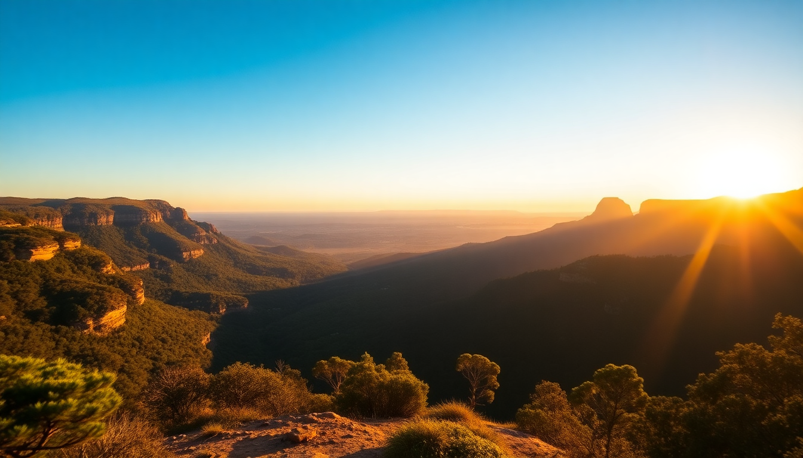

Best Day Trips from Sydney: Blue Mountains, Hunter Valley & Port Stephens

I’ve done each of these trips multiple times—once with visiting mates, once solo with a rental car, and once on a tour bus when I didn’t want to drive. Each one works as a day trip from Sydney, but they’re very different animals. Here’s what I actually learned about getting there, what’s worth your time, and what you can skip.
How do you get to the Blue Mountains without a car?
The easiest way is the train from Central Station to Katoomba. It’s about two hours, and the scenery through the Nepean River valley is genuinely good—sit on the left side for views as you climb the escarpment. I’ve done the train twice, and it’s reliable, cheap, and drops you a ten-minute walk from the main strip.
If you want to see the Three Sisters, Echo Point Lookout is the obvious spot. It’s crowded by 10 AM, but for good reason. Walk the Prince Henry Cliff Walk from there towards Leura—it’s about 90 minutes on a well-maintained path with views that beat the main lookout. I prefer the Giant Stairway descent down into the Jamison Valley, but be warned: it’s 800-odd steps down, and you have to come back up unless you catch the Scenic Railway at Scenic World. The railway is steep and a bit gimmicky, but it saves your knees.
- Katoomba – Main town for supplies, cafes, and the station. Grab a pie at the Pie Shop on Katoomba Street.
- Echo Point Lookout – Classic Three Sisters view. Arrive before 9 AM to avoid tour bus crowds.
- Scenic World – Cableway, Railway, and Skyway. The Railway is the standout. Entry is free; rides cost around AUD 50 for a pass.
- Leura Cascades – A short, pretty waterfall walk. Quieter than the main attractions.
- Wentworth Falls – Another solid walk, about 2 km return, with a proper waterfall at the end.
Is the Hunter Valley worth a day trip for wine?
Yes, if you’re strategic. It’s a 2–2.5 hour drive from Sydney, so you lose half a day to the car. I’d skip the big commercial cellar doors like McGuigan and head straight to the smaller producers. Tyrrell’s Wines is a good middle ground—historic, not too crowded, and their Vat 1 Semillon is the real deal. Brokenwood next door does a great tasting flight for around AUD 10, and the staff actually talk you through the wine instead of just pouring.
Lunch is the trick. Avoid the tourist-heavy restaurants on the main road. I ate at Muse Kitchen in Pokolbin last time—simple, seasonal menu, good wine list, and a peaceful garden setting. Book ahead on weekends. For a quick bite, the Hunter Valley Cheese Company has a tasting plate with local cheeses and crackers that works as a mid-afternoon refuel.
- Pokolbin – The wine region’s hub. Most cellar doors are within a 5 km radius.
- Tyrrell’s Wines – One of the oldest family wineries. Semillon is their signature.
- Brokenwood Wines – Excellent tasting room. Try the Graveyard Vineyard Shiraz if you’re splurging.
- Muse Kitchen – My pick for lunch. Garden seating, seasonal menu, kid-friendly.
- Hunter Valley Gardens – Overpriced and skippable unless you’re into manicured flower displays.
What’s the best way to see Port Stephens in one day?
Port Stephens is about 2.5 hours north of Sydney by car. The main draw is sand and water: the Stockton Bight Sand Dunes are massive—the largest moving sand dunes in the Southern Hemisphere. I did a 4WD tour with Port Stephens 4WD Tours that drove us onto the dunes, and we sandboarded down. It’s a bit of a workout walking back up, but the rush is worth it. The tour also stops at a remote beach where you can swim without crowds.
If you’d rather stay on the water, a dolphin-watching cruise is the standard play. Moonshadow runs a reliable two-hour trip. You’ll see bottlenose dolphins—almost guaranteed—and the crew are professional. I found it a bit touristy, but my niece loved it. For a quieter option, hire a kayak from Nelson Bay Kayak Hire and paddle around the headland yourself. You’ll see the same dolphins without the PA system.
- Stockton Bight Sand Dunes – 32 km of dunes. 4WD access only. Sandboarding is the main activity.
- Nelson Bay – The main town. Dolphin cruises depart from the marina. Good fish and chips at The Little Nel.
- Tomaree Head Summit Walk – A 2.2 km return hike with panoramic views of the bay and offshore islands. Do this early morning.
- One Mile Beach – Wide, clean, and less crowded than the main beach. Good for swimming.
- D’Albora Marina – Nice spot for a coffee and people-watching before your cruise.
When is the best season for each trip?
I’ve done all three in different months, and timing matters.
- Blue Mountains – Autumn (March–May) is ideal. Cool air, clear skies, and the crowds thin after Easter. Winter (June–August) can be foggy and freezing—I got caught in a whiteout at Echo Point once. Spring (September–November) is fine but busy.
- Hunter Valley – Any time except summer (December–February) when it’s hot and sticky. Harvest season is February–March, which is fun but chaotic. Autumn for the vines turning color, winter for fireplace wine tastings.
- Port Stephens – Summer (December–February) is peak season. Water is warm, but beaches and tours are packed. Late spring (November) or early autumn (March) give you warm weather and half the crowds. I went in March last year and had the dunes almost to myself.
Can you combine two destinations in one day?
I wouldn’t. Driving from Sydney to the Blue Mountains is 1.5 hours, Hunter Valley 2–2.5, and Port Stephens 2.5. Each one deserves a full day. I tried a Blue Mountains–Hunter Valley combo once—drove to Katoomba in the morning, then over to Pokolbin for lunch. It felt rushed, and I spent more time in the car than actually enjoying either place. Stick to one per day.
If you’re short on time, the Blue Mountains is the easiest logistically (train from Central) and gives the most bang for your half-day. Hunter Valley works best if you’re a wine drinker and willing to drive. Port Stephens is the most active option—sandboarding, hiking, kayaking—and rewards a full day.
FAQ
Is it worth renting a car for these day trips, or should I take a tour? It depends on your group size and tolerance for driving. For the Blue Mountains, the train is fine and cheaper. For Hunter Valley and Port Stephens, a car gives you flexibility—you can skip the bus stops and hit smaller cellar doors or quiet beaches. I rented from East Coast Car Rentals in Surry Hills once; they were straightforward and cheaper than the airport outfits. Tours work if you want to drink wine without worrying about a breathalyzer, but you’ll lose time at souvenir stops.
What’s the most overrated attraction on these trips? The Scenic Skyway at Scenic World. It’s a glass-floor cable car that crosses a gorge—nice view, but you’re done in five minutes and it costs extra. The Hunter Valley Gardens are also overpriced for what is essentially a big park with flower beds. I’d skip both and spend the time on a walk or a tasting.
How much should I budget for a day trip from Sydney? For the Blue Mountains by train, budget around AUD 60–80 per person (train, a meal, and a coffee). Hunter Valley with a rental car and tasting fees runs AUD 150–200 per person if you split fuel and buy a bottle or two. Port Stephens with a 4WD tour and lunch is AUD 200–250 per person. Tours (bus or minivan) add about AUD 50–100 per person but remove the driving hassle.
Conclusion
- Blue Mountains is the easiest and cheapest day trip—train from Central, walk the Prince Henry Cliff Walk, and skip the Scenic World rides unless you want the novelty.
- Hunter Valley is best for wine lovers willing to drive. Hit Tyrrell’s and Brokenwood, eat at Muse Kitchen, and avoid the commercial cellar doors.
- Port Stephens delivers sand dunes, dolphins, and a solid hike up Tomaree Head. Book a 4WD tour for the dunes, or kayak for a quieter day.
- Pick one per day. Don’t try to combine them. Each deserves a full morning-to-evening slot.
- Timing matters: autumn for the Mountains and Valley, late spring or early autumn for Port Stephens.